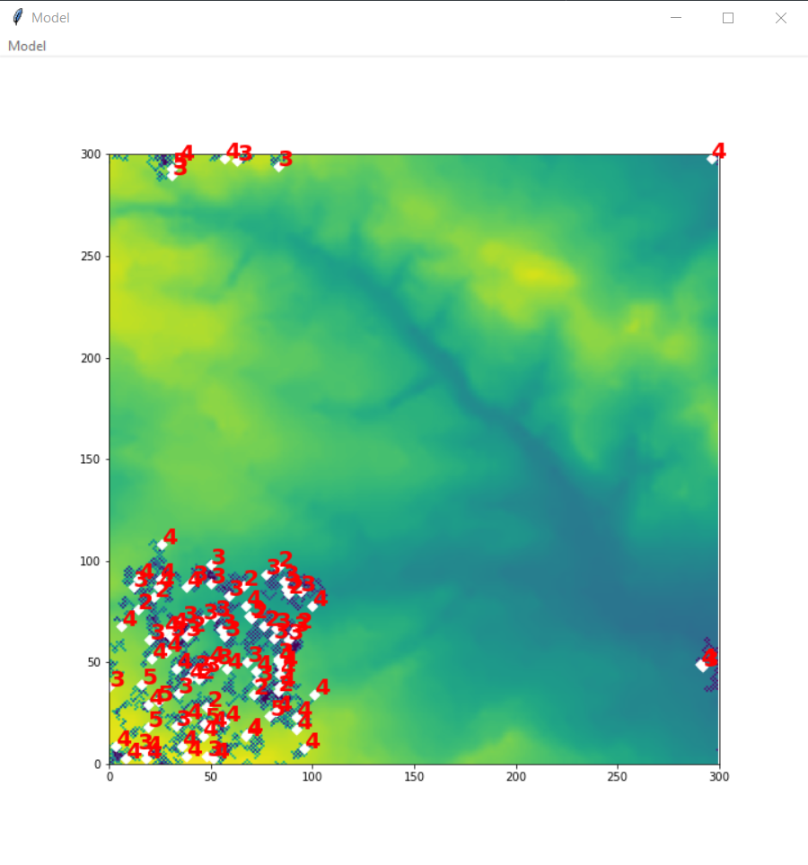

For the first assignment of the GEOG5990M Programming for Geographical Information Analysis: Core Skills module I had to create an Agent Based Model (ABM).
My Agent Based Model - Sheep and Wolves
The ABM involves agents (sheep) wandering around and eating data within an environment. When the agents eat too much data, they sick it up. If the agents are within the set proxmity of another agent they will share data. This goes on and on until the stopping conditions are met, which in this scenario is when 10% of the environment has been eaten / destroyed / removed. Wolves can also be introduced into the model. Wolves will eat the sheep when they move within a distance which is specified by the neighbourhood variable. As a result the model has another stopping condition, once all sheep have been eaten the model will end.
Within the ABM, the following variables can be changed as required:
- number of agents (number of sheep)
- number of iterations
- number of wolves
- neighbourhood (how close agents need to be before they share data / resources
- percentage of environment depleted (This is linked to a stopping condition)
Below is a screenshot of the model when running. The model has a GUI that allows you to press run and view the model in a window. Each agent (sheep) is marked as a white diamond and annotated with the number of times it has been sick. Each wolf is marked as a black diamond and annotated with the number of sheep it has eaten.
